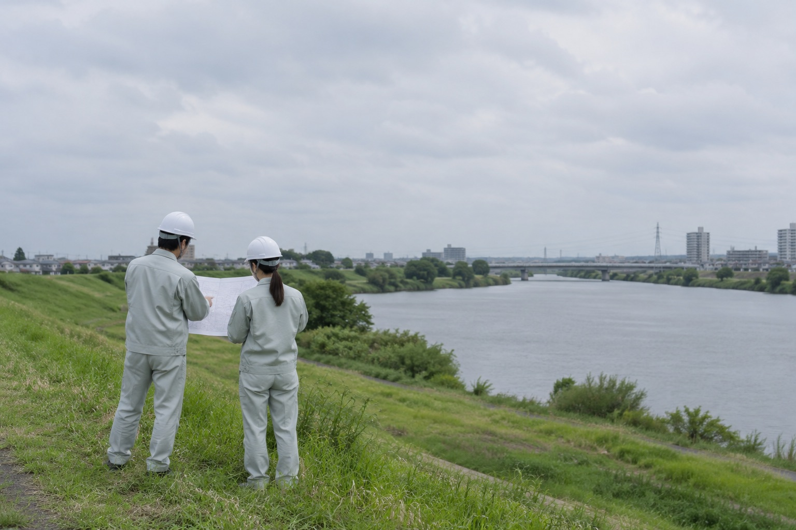

Supporting
the ground
KEISHIN CONSUL
you stand on,
"since 1980"
 仮の画像（AI生成）
仮の画像（AI生成）
Civil design, surveying and compensation consulting in Chiba.
 仮の画像（AI生成）
仮の画像（AI生成）Our Commitment
「誠意・工夫・正確」で、良質な社会資本をつくる。
千葉の、総合建設コンサルタント。
グループ
株式会社 恵進コンサル設計・測量・補償・調査チーム
鈴木博也 土地家屋調査士事務所登記・境界チーム（併設）
発注者のよき技術的パートナーとして。
設計・測量・補償を、ひとつの会社で。
私たちは、社会と共に育ち、社会に貢献することを目指し、「誠意・工夫・正確」を強く意識しながら、より高い品質管理システムを構築し、継続的な向上に努めます。
道路、河川、橋梁、上下水道、宅地造成の設計から、地形・用地・路線の測量、事業損失や物件調査の補償業務、そして土地家屋調査士事務所による登記まで。
昭和55年の創立以来、千葉市・千葉県をはじめとする発注者とともに、
地域の社会資本を支え続けています。
Our Business
私たちの業務領域。
- 仮の画像（AI生成）
( 01 )
土木設計
道路、河川、橋梁、上下水道、宅地造成、鋼構造及びコンクリート他。
予備設計から実施設計まで、公共事業の計画をかたちに。 - 仮の画像（AI生成）
( 02 )
測量
地形測量、用地測量、路線測量、地積測量他。
測量士7名・測量士補2名が、事業の土台となる精度を担います。  仮の画像（AI生成）
仮の画像（AI生成）( 03 )
補償コンサルタント
事業損失、物件調査、復旧積算他。
家屋の事前・事後調査など、公共事業と地域の暮らしをつなぎます。 仮の画像（AI生成）
仮の画像（AI生成）( 04 )
調査・許認可
機械ボーリング、原位置試験、交通量調査、下水管渠調査、開発許認可申請、地図情報システム開発他。
 仮の画像（AI生成）
仮の画像（AI生成）( 05 )
建築設計・施工監理・登記
一般建築設計・公共建築設計、土木・建築・廃棄物処理施設の施工監理。
土地家屋調査士事務所による土地分筆・合筆、建物表示登記。
Our Strengths
なぜ、選ばれ続けるのか。
それは、設計・測量・補償を
ひとつの会社で担えるからです。
( 01 ) Strengths
設計・測量・補償の
一貫対応計画から用地、完成後の登記まで。事業の各段階に、切れ目なく対応します。
 仮
仮( 02 ) Strengths
登録4部門の
総合建設コンサルタント建設コンサルタント・補償コンサルタント・測量業・土地家屋調査士事務所。4つの登録を一社で。
 仮
仮( 03 ) Strengths
14種の資格を持つ
技術者集団技術士2名、RCCM 2名、測量士7名、一級土木施工管理技士2名、土地家屋調査士など。
 仮
仮( 04 ) Strengths
千葉の公共事業で
積み重ねた45年昭和55年の創立以来、千葉市・千葉県・近隣市町の道路・下水道・河川・用地の業務を担ってきました。
仮( 05 ) Strengths
海外プロジェクトへの
参画経験JICA（国際協力事業団）のタンザニア上水道整備調査測量、ルーマニア最終処分場設計に参画。
仮( 06 ) Strengths
現場に近い、
千葉市中央区の拠点矢作町の本社から、千葉市内・近隣市町の現場へ。発注者の声に、すぐ応えられる距離です。
 仮
仮
「千葉のまちを支えたい」に、応える会社です。
測量技師・設計技師・補償コンサルタント・営業担当を募集しています。本社（千葉市中央区矢作町）勤務、週休2日、退職金制度あり。※現在の募集状況は確認中
採用情報を見る
仮の画像（AI生成） 仮の画像（AI生成）
仮の画像（AI生成）About Us
設計から登記まで、ひとつの窓口で。
株式会社恵進コンサルは、昭和55年12月に千葉市で創立した総合建設コンサルタントです。土木設計・測量・補償コンサルタント・地質調査・許認可申請・建築設計に加え、鈴木博也土地家屋調査士事務所を併設し、土地分筆・合筆や建物表示登記まで一貫して対応します。
- 商号
- 株式会社 恵進コンサル
- 所在地
- 〒260-0851 千葉県千葉市中央区矢作町151番地1
- 代表者
- 代表取締役 金木 武夫
- 創立
- 昭和55年12月11日
- 資本金
- 1,000万円
- 職員数
- 12名
- 登録
- 建設コンサルタント 建07-6992／補償コンサルタント 補05第3499／測量業者 (8)-17023／土地家屋調査士事務所 千葉第2201
News
新着情報
Contact
お問い合わせ
設計・測量・補償に関するご相談から、お見積りのご依頼まで。
どんな内容でもお気軽にご連絡ください。
TEL 043-222-0053（代表）／FAX 043-225-5355